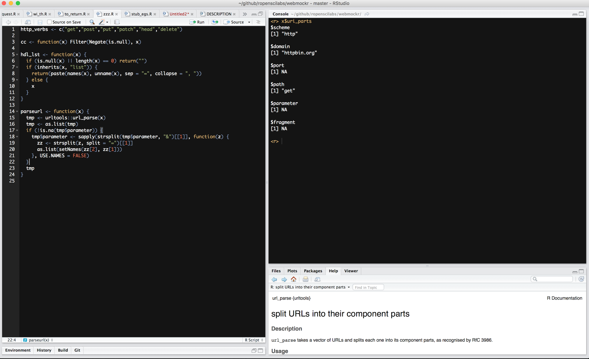

Likely just a data problem
Stop / rethink the problem
How can data be summarized?
Reduce complexity
Only deal w/ really imprt. variables
APIs aren't always the answer
FTP
Flat file/Database dumps
Too big for R? -> use a database ...
These tools great for non-academia jobs
RStudio Server

It's like you're on your own computer
Inspecting data can be hard
Errors hard to find
if you can't read the file in, how do you find the errors
dates ~ the worst, right?
missing text here and there
file type problems/no reader for the type